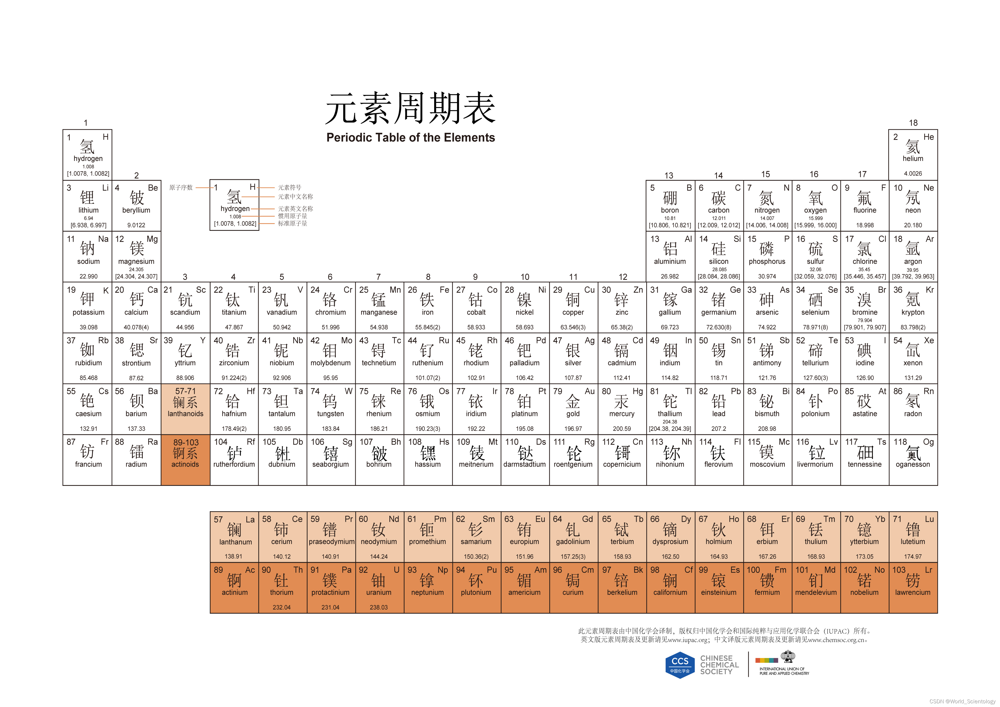

元素周期表
元素周期表是按原子序数排列的化学元素列表，反映了元素性质的周期性变化。
1
H
氢
1.008
11
Na
钠
22.99
17
Cl
氯
35.45
8
O
氧
16.00
29
Cu
铜
63.55
56
Ba
钡
137.33
47
Ag
银
107.87
化学键类型
离子键
由金属和非金属原子间电子转移形成（如 NaCl），具有高熔点、易溶于水等性质。
共价键
原子间通过共用电子对形成（如 H₂O），可分为极性键和非极性键。
常见无机反应
- 酸碱中和：HCl + NaOH → NaCl + H₂O
- 氧化还原：2Mg + O₂ → 2MgO（燃烧反应）
沉淀反应（Precipitation Reactions）
沉淀反应是指溶液中离子结合形成难溶物（溶度积常数 Ksp 较小）而析出的反应，其方向由溶度积规则判断：
- 当离子积 Qc > Ksp 时，溶液过饱和，生成沉淀；
- 当 Qc = Ksp 时，溶液饱和，达到平衡；
- 当 Qc < Ksp 时，溶液未饱和，无沉淀生成（或沉淀溶解）。
典型例子：
- 氯化银沉淀：Ag⁺(aq) + Cl⁻(aq) → AgCl↓（Ksp = 1.8×10⁻¹⁰）
- 氢氧化铜沉淀：Cu²⁺(aq) + 2OH⁻(aq) → Cu(OH)₂↓（Ksp = 2.2×10⁻²⁰）
- 硫酸钡沉淀：Ba²⁺(aq) + SO₄²⁻(aq) → BaSO₄↓（Ksp = 1.1×10⁻¹⁰）
大学无机化学课程大纲
本课程旨在系统介绍无机化学的核心概念与应用，适合本科生作为主干课程或选修。
课程大纲（快速导航）
- 原子结构与周期律（详细页）
- 化学键与分子结构（详细页）
- 配位化学与配合物（详细页）
- 描述性无机化学（主族与过渡族）（详细页）
- 固体与材料化学（详细页）
- 热力学与动力学（详细页）
- 光谱、表征与分析方法（详细页）
- 有机金属化学简介（详细页）
- 生物无机化学（详细页）
- 应用与实验技能（详细页）
1. 原子结构与周期律
内容概述：电子构型、量子数、能级与轨道、原子半径、电离能、电负性以及周期表的系统性与周期性趋势。
- 关键点：泡利不相容原理、洪特规则、屏蔽效应。
- 应用：元素性质预测、离子半径与晶体结构关联。
2. 化学键与分子结构
内容概述：离子键、共价键与金属键的本质；价轨道理论（VBT）与分子轨道理论（MOT）；配位键与配位数的影响。
- 关键点：杂化轨道、σ/π 键、键能与键长。
- 工具：MOT 用于解释磁性与光谱性质。
3. 配位化学与配合物
内容概述：配体分类、配位数、配位几何、电子结构（场论、配位场分裂），配合物的稳定性常数与配体场强弱顺序。
- 关键点：朗德-施泰纳范德瓦尔斯、配位异构体、配合物的色彩与磁性。
- 实验与应用：配位化学在催化、生物化学（血红素、催化剂）中的角色。
4. 描述性无机化学
内容概述：逐族或逐段讲解主族元素与过渡金属的重要化学性质、典型化合物、工业应用和常见反应。
- 例如：卤素与卤化物、碱金属/碱土金属的反应性、过渡金属的氧化态与配位化学。
5. 固体与材料化学
内容概述：晶体结构（点阵与晶格）、缺陷、导电/半导体/绝缘体分类、离子导体与磁性材料基础。
- 关键点：布拉维格子、X 射线衍射基本原理、晶体场效应。
6. 热力学与动力学
内容概述：反应热、自由能、溶解度与溶度积（Ksp），以及反应速率、机理和电子转移过程的动力学考量。
- 关键点：Gibbs 自由能与平衡常数、活化能与速率方程、催化与过渡态理论。
7. 光谱、表征与分析方法
内容概述：红外（IR）、紫外可见（UV-Vis）、核磁共振（NMR，主要用于含核的配合物/有机金属）、质谱、XRD 与电化学技术。
- 应用：通过谱学鉴定配位环境、氧化态与键合信息。
8. 有机金属化学简介
内容概述：M–C 键的类型、常见有机金属配合物、催化（如加氢、交叉偶联）中的作用与基本反应步骤（氧化加成、迁移插入、还原消除）。
9. 生物无机化学
内容概述：金属在生物体系中的功能，如金属酶（Fe、Cu、Zn）、金属-配体在电子传递与催化中的角色，以及金属离子在药物化学中的应用。
10. 应用与实验技能
内容概述：无机合成与分离技术、滴定与定量分析、溶解度与沉淀实验，以及将理论知识应用于材料、催化、分析和环境化学问题。
- 建议实验：制备沉淀样品、配合物合成、简单的电化学测量。
推荐教材与延伸阅读：
- Huheey, E. A., Keiter, E. A. & Keiter, R. L., Inorganic Chemistry（经典教材，系统且详实）。
- Atkins & de Paula 的物理化学章节（热力学与动力学部分）。
- 在线资源：化学教育网站、NIST 化学数据库与期刊综述。